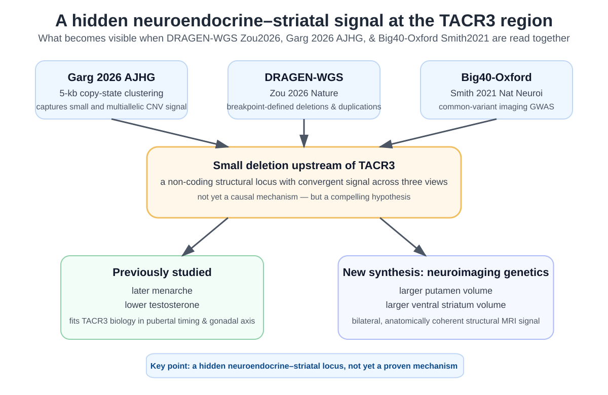

A non-coding deletion linking the gonadal axis to striatal morphology
A structural-neuroimaging reading of DRAGEN-WGS, Garg 2026 AJHG, and Big40-Oxford.
Some genetic findings arrive as loud headline results. Others sit quietly in supplementary tables until someone reads them from a different angle. The small deletion upstream of TACR3 feels like the second kind.
At first glance, it looks like a hormone locus. In the UK Biobank CNV PheWAS from Garg 2026 AJHG, lower copy number in a short interval upstream of TACR3 is associated with later menarche and lower testosterone. That part fits what many geneticists already know: TACR3 sits squarely in pubertal timing and gonadal-axis biology. But the same structural interval also shows a much more specific brain signal — larger bilateral putamen and ventral-striatal volumes. Read through a neuroimaging lens, it becomes something more interesting: a coherent neuroendocrine–striatal locus hidden inside a broad 13,000-phenotype PheWAS resource.
That is where the story sharpens. DRAGEN-WGS from Zou 2026 Nature recovers an almost matching deletion with the same four structural MRI phenotypes and the same direction of effect. Big40-Oxford then supplies a third view, showing a nearby common-variant imaging signal for those same striatal traits. None of this yet proves mechanism. But together, these three resources reveal a clean and biologically plausible signal that would be easy to miss if each dataset were read in isolation.

A visual summary of the main point: three different genetic views converge on a small structural locus near TACR3, with established endocrine associations and a coherent striatal MRI pattern.
Why this caught my attention
The interesting part is not just that there is a brain association. It is the pattern. The MRI traits are not scattered across the phenome. They fall on the left and right putamen and left and right ventral striatum — a bilateral, anatomically coherent set of subcortical structures. And they sit beside endocrine phenotypes that already make biological sense for the same locus.
That combination makes the deletion worth a closer look. It does not read like a random PheWAS by-product. It reads like a structural locus that may connect gonadal-axis biology to striatal anatomy.
What is newly highlighted here: the same structural interval also carries a coherent bilateral striatal MRI signal, and that signal is recoverable across three complementary genetic resources.
There is also external biological support around the locus, even if not yet direct proof of mechanism. TACR3 is a well-established gene in pubertal timing and hypogonadotropic hypogonadism, and public brain-expression resources place it in striatal tissue, including putamen-related contexts. That does not prove that the deletion acts through TACR3, but it makes the endocrine–striatal interpretation biologically credible rather than arbitrary.
Three views of the same region
| Resource | What it measures | Why it matters here |
|---|---|---|
| Garg 2026 AJHG | 5-kb copy-state clustering from WGS read depth | Shows the upstream TACR3 interval as a regional copy-number signal associated with later menarche, lower testosterone, and larger bilateral putamen and ventral striatum. |
| DRAGEN-WGS Zou 2026 Nature |
Breakpoint-defined deletions and duplications from WGS | Recovers an almost matching deletion, the same four structural MRI associations, the same direction of effect, and again a testosterone association. |
| Big40-Oxford Smith 2021 Nature Neuroscience |
Common-variant imaging GWAS | Provides a nearby common-variant signal for the same striatal MRI traits, supporting the idea that this is a real imaging locus rather than a one-off CNV artefact. |
This is why Garg and Zou are unusually complementary. Garg is better at exposing short, multiallelic or structurally awkward copy-number signals. DRAGEN-WGS is better at giving interpretable deletion and duplication events with clear breakpoints and explicit effect models. Big40-Oxford is not a CNV study, but it tells us whether the same part of the genome already looks important from the common-variant side.
Put simply: three different genetic representations point to the same part of chromosome 4 and the same part of the striatum.
What each resource uniquely adds for neuroimaging genetics
1) Garg 2026 AJHG makes difficult CNV territory visible
From a structural-neuroimaging perspective, the real added value of Garg is not the full catalog of 13,000 phenotypes. It is the kind of copy-number biology that becomes visible at population scale: common multiallelic regions, recurrent rearrangements, segmental-duplication loci, chromosome X, and some mosaic events. Many of these are exactly the regions where standard event-based CNV pipelines and ordinary SNP-GWAS interpretations are least comfortable.
The TACR3 example is the clean case. Other loci in Garg show the broader potential: a short pallidal locus near SLC20A2/SMIM19, a high-copy hippocampal-subfield signal in a segmental-duplication-rich region on chromosome 15, and an Xq28 structural locus with occipital cortical surface-area associations. These are not the central story here, but they show why a 5-kb read-depth view matters for neuroimaging genetics.
2) DRAGEN-WGS adds interpretability
DRAGEN-WGS from Zou 2026 Nature is valuable for a different reason. It makes the CNV easier to talk about as an event: a deletion or duplication with breakpoints, a carrier count, and explicit dominant or recessive models. It also adds gene-level collapsing, integration with protein-truncating variants, pQTL analyses, and formal CNV–SNP LD and conditioning analyses.
For the TACR3-region signal, this matters in two ways. First, it tells us that the MRI association is not peculiar to one copy-state clustering method: a discrete deletion model recovers it too. Second, it gives the right language for the next question — is this striatal MRI signal mainly a CNV effect, a nearby SNP-tagged effect, or part of a larger regulatory haplotype?
3) Big40-Oxford gives the common-variant context
Big40-Oxford helps anchor the locus within the imaging-GWAS world most neuroimaging researchers already know. At the TACR3 region, it shows a nearby common-variant association for the same striatal traits. That does not settle causality, but it does matter. It says that this region is already visible from a common-variant imaging perspective, and the CNV resources may be helping us see one structural layer beneath that signal.
The broader message is that some imaging loci may not be best understood as “the lead SNP.” They may be better understood as structural haplotypes in which SNP and CNV information sit on top of each other.
A few other hidden nuggets
- SLC20A2 / SMIM19 and pallidum volume: Garg picks up a short copy-number signal at a pallidal locus that Big40-Oxford already sees strongly from the SNP side. This is a good example of structural reinterpretation rather than a clean new discovery.
- Chromosome 15 hippocampal-subfield locus: Garg shows a striking but high-risk high-copy signal spanning CA3, CA4, dentate gyrus and hippocampal tail. It is exciting, but it also sits in difficult structural territory and needs repeat-aware validation before any strong biological interpretation.
- Xq28 visual-cortical locus: Garg contributes something the autosome-focused DRAGEN-WGS framework does not — a structured chromosome X signal tied to occipital cortical surface area. Even if the mechanism remains unresolved, this is a useful reminder that entire classes of neuroimaging-relevant structural variation disappear when chromosome X is left out.
Together, these loci show complementarity rather than competition. When DRAGEN-WGS and Garg agree, the result gains credibility. When Garg sees a difficult high-copy or sub-10-kb locus that DRAGEN-WGS cannot represent cleanly, that is not failed replication — it is a sign that the two methods are looking at partly different parts of structural variation.
The aim here is not to be exhaustive, but to surface a few other signals that are easy to miss in broad PheWAS resources and may reward a closer neuroimaging-focused look.
Where the pQTL and LD layers help — and where they do not
One reason Zou is especially useful is that it moves beyond detection and into interpretation. The pQTL layer shows how some CNVs connect to measurable downstream protein changes. The reciprocal CNV–SNP conditioning framework shows that, at some loci, the common-variant and structural-variant signals are largely redundant, while at others they remain partly independent.
For the TACR3-region deletion, that matters conceptually even if it does not yet settle the imaging mechanism. The striatal MRI signal is suggestive of a structural contribution, but it still needs formal locus-level conditioning against nearby SNP signals — especially in a region that also sits near the much stronger SLC39A8 subcortical volume locus. So the current state is not “mechanism solved.” It is “the right hypothesis has now become visible.”
Caveats that matter
- Not external replication: Garg, DRAGEN-WGS and Big40-Oxford all draw heavily on UK Biobank, so their agreement is best described as cross-pipeline or cross-representation convergence, not independent replication.
- Imaging covariates still matter: the two CNV PheWAS studies were not designed as neuroimaging-specific GWAS. A full imaging follow-up should consider intracranial volume, appropriate global subcortical scaling, and the richer deconfounding framework used in dedicated imaging genetics studies.
- Nearest gene is not causal gene: “upstream of TACR3” is a biologically sensible label, but not a proof that TACR3 is the effector transcript.
- LD remains unresolved: the key next step is formal conditioning on nearby SNPs, including the local Big40-Oxford signal and the stronger nearby SLC39A8 locus.
- Structural complexity is not a side issue: one of the strengths of these resources is that they open difficult parts of the genome. That same strength also means some loci will require much more cautious validation.
The take-home point
If I were to reduce the whole post to one sentence, it would be this: a small non-coding deletion near TACR3 may connect gonadal-axis biology to striatal morphology, and that idea becomes visible only when CNV and common-variant views of the same UK Biobank neuroimaging data are read together.
Notes and references
- Garg et al. (2026, AJHG): A phenome-wide association study of CNVs genotyped from genome sequencing read depth in the UK Biobank.
- Zou et al. (2026, Nature): Phenome-wide analysis of copy number variants in 470,727 UK Biobank genomes. I refer to this resource here as DRAGEN-WGS.
- Smith et al. (2021, Nature Neuroscience): Enhanced Brain Imaging Genetics in UK Biobank. I refer to the open Oxford imaging GWAS resource as Big40-Oxford.
- García-Marín et al. (2024, Nature Genetics): Genomic analysis of intracranial and subcortical brain volumes yields polygenic scores accounting for variation across ancestries.
- Hormone biology context: TACR3 is a well-established pubertal-timing / hypogonadotropic hypogonadism gene. This provides biological context for the menarche and testosterone associations, although it does not itself prove the mechanism of the MRI signal.
- Expression context: public expression resources place TACR3 in brain tissue including striatal contexts, which supports — but does not prove — the neuroendocrine–striatal interpretation.
- Note: This is an exploratory synthesis for blog discussion, not a formal replication study.